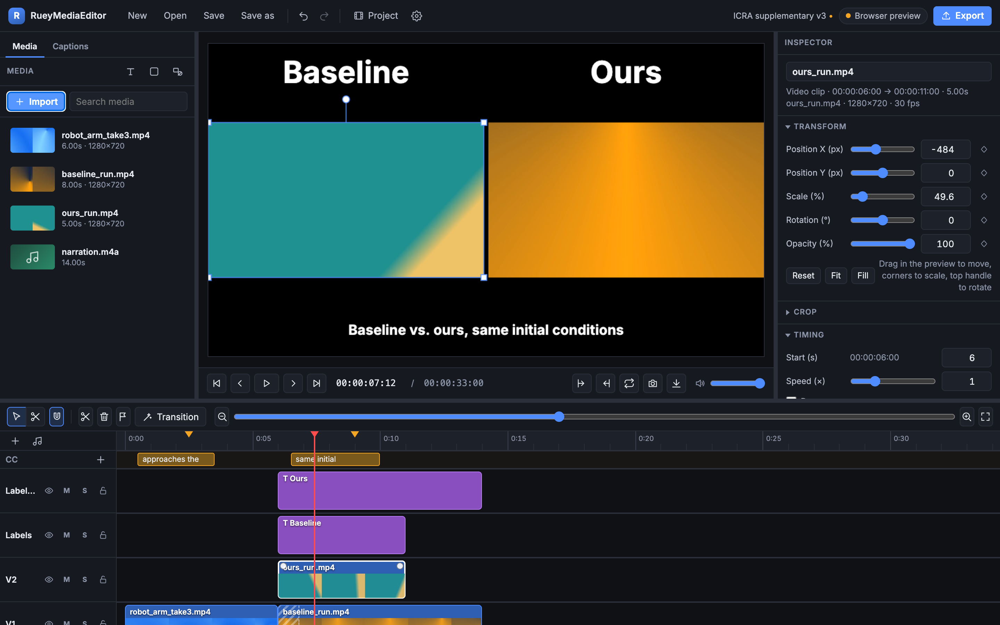

The video editor
you compilereadown yourself.
A free desktop editor with a compiled Rust + FFmpeg engine, made for research videos. Multi-track timeline, side-by-side comparisons, captions, keyframes, and export that runs at native speed. No installer to trust: clone it, build it, run it.
Dark where you work, light where you read.
Three panels, one timeline, no clutter. Everything you touch is a plain HTML element you can restyle in an afternoon.

Baseline. Ours. Done.
The parts of a research video that eat an afternoon in a general-purpose editor are one action here.
- Layouts in one click. Side by side, three across, 2×2, picture in picture. "Compare with labels" drops Baseline · Ours · Ground truth above each cell.
- Sync by audio. Two recordings of the same run line up automatically.
- Overlays for figures. Timecode and frame numbers, arrows, boxes, freeze frames, and a pixel-exact frame export.
- Venue presets. ICRA, IROS, RSS, CoRL, CVPR, NeurIPS: warns about length and picks a bitrate that lands under the size limit.
A real editor, not a toy.
The core of a non-linear editor done properly, with FFmpeg doing the heavy lifting at native speed.
Multi-track timeline
Unlimited video and audio tracks. Drag, trim, razor, ripple delete, snapping to everything, markers, in/out points, labelled undo history.
Transform & keyframes
Position, scale, rotation, opacity, crop and volume, all keyframable with easing. Drag, resize and rotate right on the preview.
Transitions
Cross dissolve, fades, wipes, slides, circles via FFmpeg's xfade. One line to add another.
Titles & captions
Styled text clips, a caption lane, SRT in/out, and local transcription with whisper.cpp.
Audio
Volume and fade handles, mute/solo, detach audio, pitch-corrected speed, silence removal.
Colour & effects
Exposure, temperature, LUTs, blur, sharpen, chroma key, grain, vignette, one-click looks.
Any format in
Anything FFmpeg reads. Proxies keep 4K editing smooth on a laptop.
Fast export
H.264, HEVC, VP9, AV1, ProRes, GIF, audio-only, single frames. Hardware encoders when available.
Three steps. No download page.
Everything the build needs is in the commands below: Rust, the platform toolchain, and Tauri's system libraries. FFmpeg is picked up from your PATH, or the app downloads a static build on first launch. Works on macOS (Intel and Apple silicon), Windows 10/11, and Linux.
Want to change something? The interface is plain HTML, CSS and JavaScript in ui/. The engine is Rust in src-tauri/; adding an effect is one match arm. The README walks through the architecture.
Trust the code, not a binary.
Read it
About ten thousand lines, no bundler, no framework. export.rs shows exactly what runs on your footage.
Own it
Your files never leave your machine. Nothing to sign in to, nothing that phones home, nothing that expires.
Change it
Same toolchain as everyone else. Add the feature you need, rebuild, and send a pull request if you like.